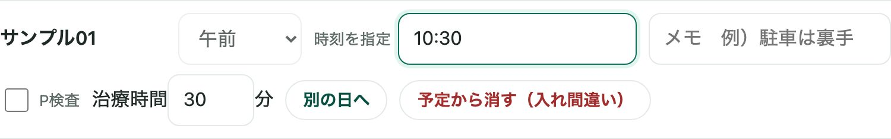
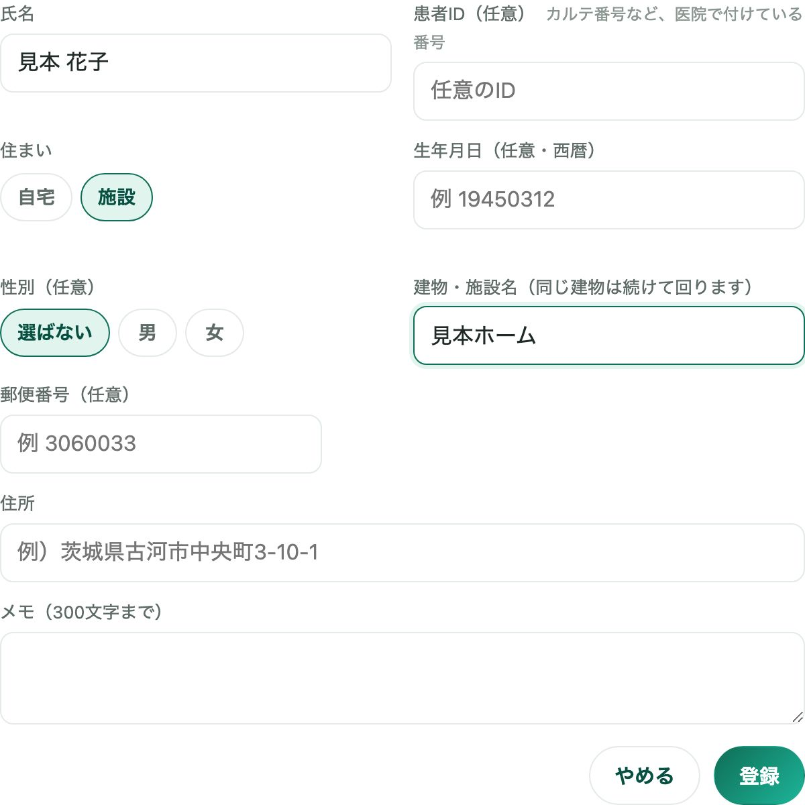
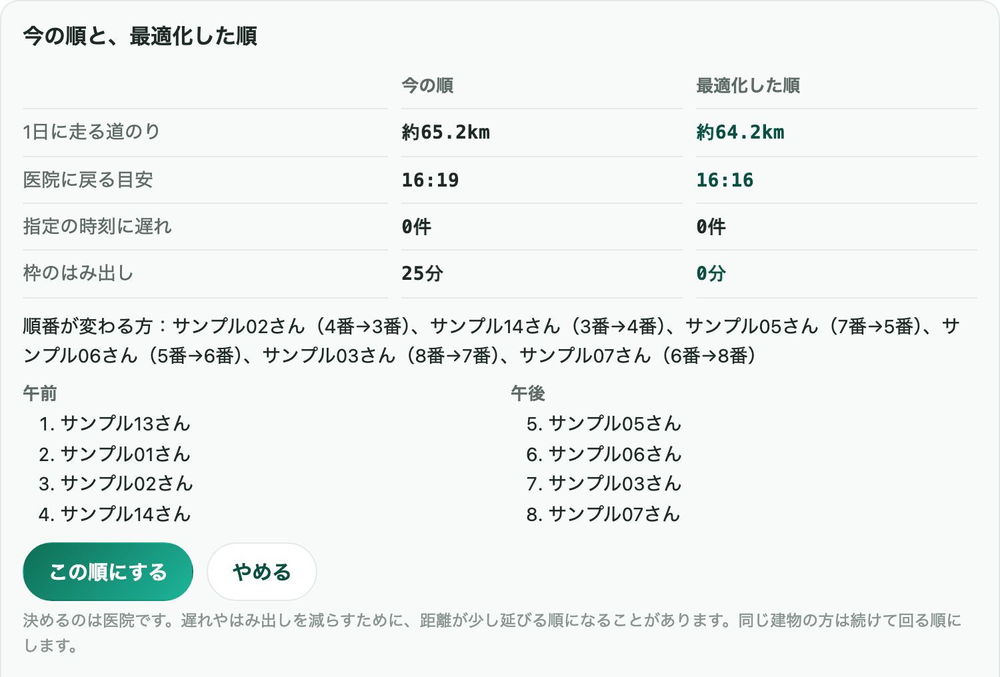
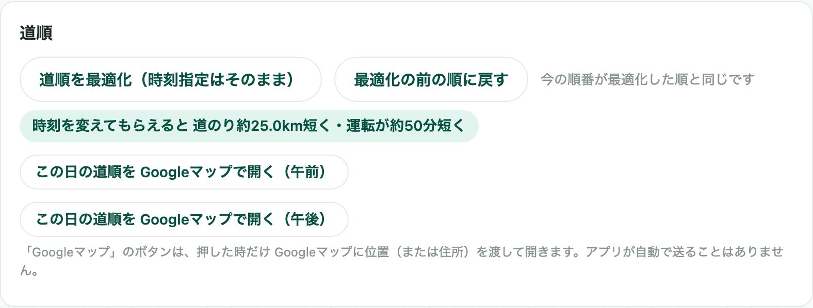
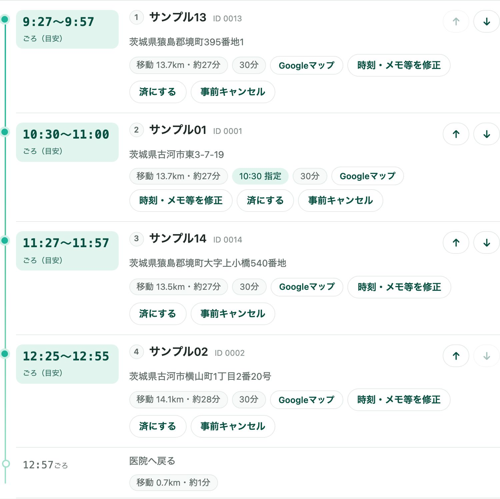
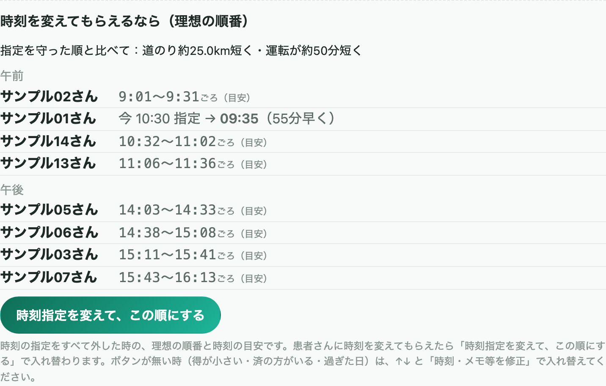
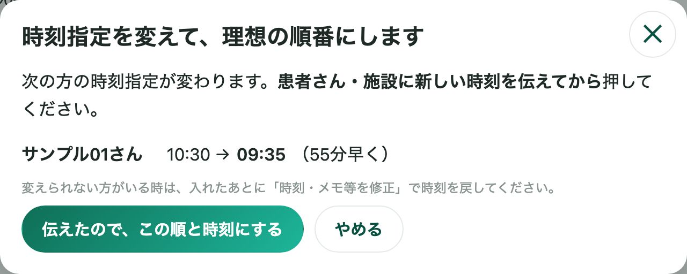
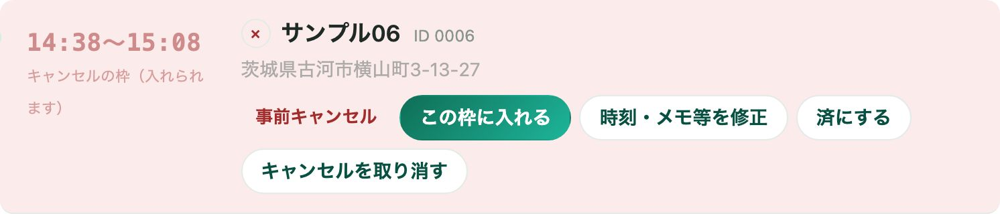
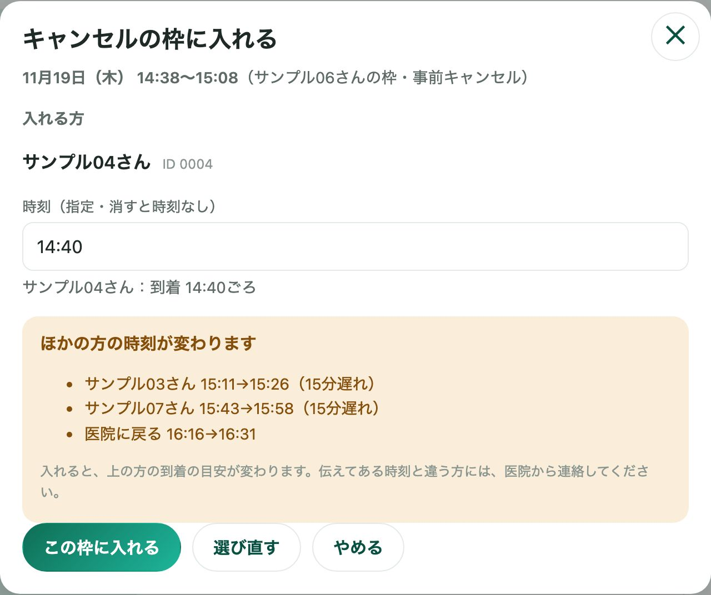

GUIDE — 順番の決め方
訪問診療お助けくんで、訪問歯科の順番を決める──時刻指定を入れて、道順の提案を見比べる
訪問診療お助けくんで、その日の訪問の順番（ルート）を決める手順を、実際の画面で説明します。時刻を約束した方を先に時刻指定にしておき、アプリの道順の提案を今の順と見比べて、必要な所だけ手で直す流れです。
基本は STEP 1・3・4 の3つです。STEP 2 と STEP 5〜7 は、施設の方がいるときやキャンセルが出たときなど、必要なときだけ読んでください。
医院の登録や予約の入れ方がまだの方は、先にはじめての使い方をご覧ください。
POINTS — 先に知っておくと迷わないこと
- 時刻を約束した方は、先に時刻指定にしておきます。並べ替えても、その時刻に間に合うかを見ながら計算します
- 道順の提案は、今の順と見比べてから決めます。「この順にする」を押すまで、順番は変わりません
- 細かい入れ替えは、行の ↑↓ で。入れ替えられるのは同じ午前・午後の中だけです
STEP 1時刻の約束を登録する
時間を約束した方は、先に「時刻指定」にしておきます。
- その日の予定で、約束した方の行の 時刻・メモ等を修正 を押します。下の「もっと見る」の中に、その方の欄が開きます。
- 開いた欄の「時刻を指定」に、約束した時刻を「1030」か「10:30」の形で入れます。欄から離れると保存されます。
- 行に「10:30 指定」のような印が付きます。午前・午後は入れた時刻に合わせて決まり、変わるときはその枠の最後に入ります。

予約を入れるときに時刻を約束する場合は、確認の画面の「時刻指定にする」のチェックでも、同じ時刻指定になります。おすすめの日時から進んだときは、はじめからチェックが付いています。
時刻指定の方に間に合わない順になっているときは、行の印が「間に合わない」に変わり、上の「確認してください」の欄にも出ます。
STEP 2施設の登録を確かめる
施設に入っている方は、住まいと建物・施設名を登録しておきます。
- 「患者」の画面で、その方の 編集 を押します。新しく登録するときは 患者を登録 を押します。
- 「住まい」で 施設 を選び、「建物・施設名」に施設の名前を入れます。
- 登録 を押します。

建物・施設名が同じ方は、道順の提案で、同じ午前・午後の中で続けて回る順になります。
住まいが「施設」で同じ建物の方を同じ日に入れると、その日の予定に「同じ施設の方が同じ日に入っています」と出ます。同じ建物の方を同じ日に診ると算定が変わることがあるための知らせで、入れることはできます。
この知らせは、設定の「同じ施設の方を同じ日に入れたら知らせる」で切ることもできます。
STEP 3今の順と提案を見比べる
アプリが出す道順の提案を、今の順と並べて見比べます。
- その日の予定の下の もっと見る を開きます。
- 「道順」の欄の 道順を最適化（時刻指定はそのまま） を押します。
- 「今の順と、最適化した順」が開きます。1日に走る道のり・医院に戻る目安・指定の時刻に遅れ・枠のはみ出しを、2つの列で見比べます。
- 変えるなら この順にする、今のままなら やめる を押します。
今の順が提案と同じ日は、「今の順番が、最適化した順と同じです。」と出て、「この順にする」の代わりに 閉じる が出ます。

時刻指定の方は、その時刻に間に合う順の中から選びます。遅れや枠のはみ出しを減らすために、距離が少し延びる順になることもあります。
この順にする を押すまで、順番は変わりません。押したあとは、「道順」の欄に 最適化の前の順に戻す が出ます。

戻せるのは、アプリを開いている間の、その日の直近の1回だけです。その日に予定を足したり消したりしたあとは、戻せなくなります。
※ ボタンは、道路データの取り込みが済んでいて、午前か午後に2件以上あるときに出ます。1つの午前・午後に12件を超える日は、近似の計算になります。
STEP 4必要な所だけ ↑↓ で直す
提案のあとで変えたい所は、行の ↑↓ で入れ替えます。
- 動かしたい方の行の右にある ↑ か ↓ を押します。
- 1つ前か1つ後ろの方と入れ替わり、到着の目安がすぐに計算し直されます。

入れ替えられるのは、同じ午前・午後の中だけです。時刻指定の方の時刻は変わらないので、入れ替えたあとに印が「間に合わない」になっていないか確かめてください。
STEP 5時刻を変えられる場合の案を見る
時刻を変えてもらえるなら、もっと楽な順番があるかを確かめます。
- 時刻指定の方がいる日は、STEP 3 の「今の順と、最適化した順」の下に、「時刻を変えてもらえるなら（理想の順番）」が出ます。
- 時刻の指定をすべて外したときの順番と時刻の目安と、指定を守った順より短くなる道のり・運転の時間が並びます。
- 患者さん・施設に新しい時刻を伝えてから、時刻指定を変えて、この順にする を押します。
- 確認の画面で、変わる方と新しい時刻を確かめて、伝えたので、この順と時刻にする を押します。


差が小さい日は、「時刻を変えても、指定を守った順と大きくは変わりません。」と出ます。得が小さいとき・その日に済の方がいるとき・過ぎた日は、ボタンは出ません。
変えられない方がいたときは、入れたあとに「時刻・メモ等を修正」でその方の時刻を戻してください。入れたあとに出る 元の順と時刻に戻す で戻せる条件は、STEP 3 の「最適化の前の順に戻す」と同じです。
戻すときも、手で直した時刻と、済・キャンセルにした方の時刻は、そのまま残ります。
STEP 6キャンセルを記録し、必要なら枠に入れる
キャンセルが出ても、ほかの方の時刻は動かしません。
- キャンセルした方の行の 事前キャンセル を押します。訪問の日（当日）は 当日キャンセル も出ます。
- 行の色が変わり、「キャンセルの枠（入れられます）」と出ます。その方の時間はそのまま残るので、ほかの方の到着の目安は変わりません。
- 空いた時間に別の方を入れるときは、この枠に入れる を押し、キャンセル待ちの方か、ほかの患者さんから選びます。
- 入れる方は、はじめから枠の始まりの時刻（5分刻み）で時刻指定になります（消すと時刻なし）。時刻と、ほかの方への影響を確かめて、この枠に入れる を押します。


ほかの方の目安が変わるときは「ほかの方の時刻が変わります」と出ます。伝えてある時刻と違う方には、医院から連絡してください。
変わらないときは「ほかの方の時刻は変わりません」と出ます。キャンセル待ちの方は、「患者」の画面でその方の「訪問履歴」（または「治療・訪問履歴」）を開き、「キャンセル待ちに入れる」で登録しておけます。
STEP 7Google マップで道案内を開く
回るときの道案内は、Google マップで開きます。
- 1人ずつ開くときは、行の Googleマップ を押します。予定のいちばん上の「次の訪問」（まだ済でない最初の方）の Googleマップで道案内 からも開けます。
- その日の道順をまとめて開くときは、「道順」の欄の この日の道順を Googleマップで開く（午前） を押します。午後も同じです。
訪問先が多い日は、道順のリンクがいくつかに分かれます。分ける件数は、設定の「Googleマップの経由地の上限（件）」で決められます（1〜9件）。
スマートフォンのブラウザでは、経由地が3件までしか通らないことがあります。Google マップに位置や住所を渡すのは、ボタンを押したときだけです。
よくある質問
提案の順番にしたら、時刻指定の方に間に合わなくなりませんか？
提案は、時刻指定の方がその時刻に間に合う順の中から選びます。どの順でも間に合わないときは、比べる表の「指定の時刻に遅れ」に件数が出て、その日の予定の「確認してください」にも出ます。
1つの午前・午後に12件を超える日は近似の計算になるため、間に合う順があっても見つけられないことがあります。
提案の順番にしたあとで、元に戻せますか？
「道順」の欄の「最適化の前の順に戻す」で戻せます。戻せるのは、アプリを開いている間の、その日の直近の1回だけです。
その日に予定を足したり消したりしたあとは戻せません。
キャンセルが出たら、ほかの方の時刻は詰まりますか？
詰まりません。キャンセルした方の時間はそのまま残り、ほかの方の到着の目安は変わりません。
空いた時間に別の方を入れるときは「この枠に入れる」から選びます。入れる方によってほかの方の目安が変わるときは、入れる前に画面に出ます。
到着の目安が実際とずれます。
到着の目安は、道路の距離（道のり）と設定の「平均の移動速度」から出す目安で、渋滞などは反映しません。設定の「平均の移動速度」「1件の所要時間」や、予約ごとの治療時間を、医院の実際に合わせて直してください。
「道順を最適化」のボタンが出ません。
道路データの取り込みが済んでいて、午前か午後に2件以上あるときに出ます。道路データの様子は、「設定」の「地図」にある「道路データ」の行で確かめられます。
「訪問診療お助けくん」は、訪問歯科・訪問診療をしている医院のための iPad・iPhone アプリです。その日の訪問の順番を道路の距離を参考に提案し、新しい予約を入れる日時をおすすめします。
医院の iPad・iPhone で同じ予定を共有できます。
患者さん10人までは無料で使えます。※ カーナビ・医療機器ではありません。到着の時刻と道のりは目安で、道案内は Google マップで開きます。
App Store で入手 アプリ紹介ページ出典
- OpenStreetMap「著作権とライセンス」（アプリの道路データの元） https://www.openstreetmap.org/copyright
- 国土地理院「地理院地図」（アプリの地図と住所検索） https://maps.gsi.go.jp/
このページは、アプリのバージョン 1.0（2026年11月時点）の画面と動作をもとに書いています。画面は iPad と同じ幅で表示した説明用のもので、患者さんの名前と住所は架空のものです。画面の文言や配置は、今後のアップデートで変わることがあります。訪問の可否・時間・算定の判断は、各医院で行ってください。